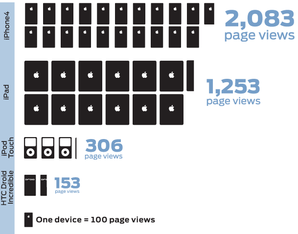

Reesenews.org received 97,977 total page views this fall. The spike on Nov. 17 corresponds to the story "Reesenews producer Monty Cook resigns," our most popular story during the data collection period. The drop-off in mid-December reflects the beginning of UNC-Chapel Hill's winter break.
Rollover the graph to see the number of page views for each day.
"Reesenews producer Monty Cook resigns" was our most-viewed, most-commented and most-tweeted story this fall. "The return of 'The Rat,'" which was popular with UNC alumni, was most-shared on Facebook.
Rollover each of the graphs to see more statistics for our top stories.
Our more light-hearted videos were popular with readers this fall. "The UNC streaking tradition" was our most-viewed video during the data collection period, followed by "UNC's Thorp Dances Thriller." Most viewers did not watch these videos all the way through – for information on viewer drop-off, see the full PDF.
Rollover the graph to see more statistics for our top videos.
Media blogs and education blogs were important sources of traffic this fall, as were sports forums. Social networking sites were also important – Facebook alone referred 12.4% of our readers.
Not shown here: Most views to story pages did not come from the homepage. Please see the full PDF for more information.
Rollover the graph to see the statistics for our top website referrals.
Most readers did not use a mobile device to view reesenews.org. However, of those that did, the majority used either an Apple iPhone or iPad.
Most of our visitors came from the U.S., but we also received visits from Canada, the United Kingdom, Australia, Germany and other countries. We received a small number of visits from some unlikely places, too – including one from Fiji and two from Haiti.
Rollover the light blue countries to view statistics for the number of visitors to our site. Click on the U.S. or North Carolina to zoom in.